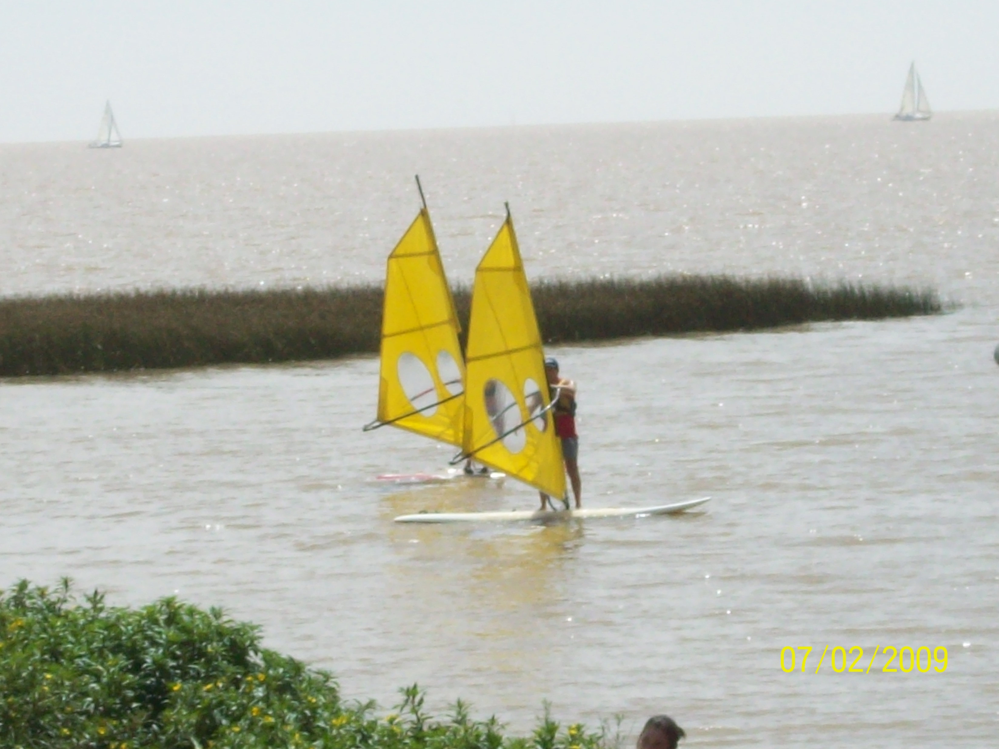
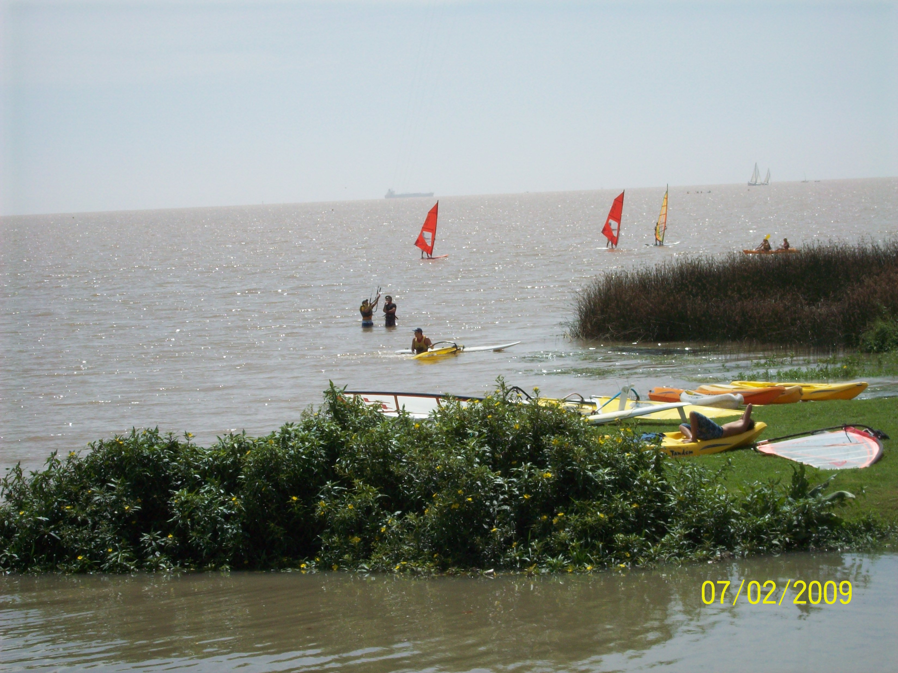

WindsurfingI find many practical similarities between windsurfing and life. For me, sailing is a blend of sport and an artistic form of expression.Key concepts include: Things that might seem like adversity or a challenge (such as the current, the wind, or other environmental factors) can, in fact, be leveraged for progress. This largely depends on elements like:   After 10 years i went back to try this sport and here is my diary. A video i made in the River of La Plata the Saturday 27th Feb: |